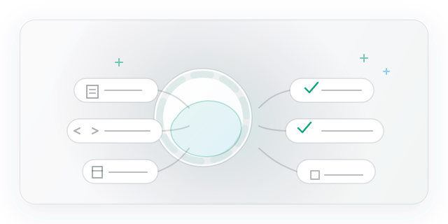

ユーザーからみたAIエージェント体験
チャットボットとしてのAIエージェントには、ある「ビフォー／アフター」があります。

Before：従来のチャットボット
- ルールベースや単純なスロットフィリングが中心。
- 文脈を維持せず、同じ質問を何度も聞かれる。
- 対話が一方的で、ユーザーの意図に対する踏み込みが浅い。

After：今のAIエージェント
- CodexやClaudeCodeのようなモデルがコードやドキュメントを理解して応答。
- 文脈を把握したマルチターン対話と、必要な補足情報の提案。
- ユーザーの役割を理解し、具体的なアクションに結びつける対話。
AIエージェントは、単なる問い合わせ窓口ではなく「意図を達成するためのパートナー」になろうとしています。
MCP＆A2Aを支える仕組みとアーキテクチャ
MCP（Multi-Channel Platform）ツールは、複数のインターフェースを横断してユーザーとモデルをつなぎます。CLI、Web、APIなどのチャンネルに共通のコンテキストやステート管理を提供することで、ユーザー体験の一貫性を確保しています。
A2A（Agent to Agent）通信は、専門特化型エージェント同士が役割分担して連携する仕組みです。たとえば、ドキュメント理解担当のエージェントがKnowledge Baseを検索し、アクション担当エージェントが結果をもとに外部APIを呼ぶといった構成になります。MCPはこうしたエージェント間のメッセージバスや認証・ロギングも担い、全体の信頼性を高めます。
これらの層を通じて、ユーザーとの対話は単なる質問応答から「情報収集→推論→実行」へと進化します。
エンジニア向け：実装手段とライブラリ
エージェントを実装する際には、生成AIのバックエンドからオーケストレーションまでを扱うプラットフォームやライブラリが役立ちます。
- AWS Bedrock AgentCore：プロンプトテンプレート、APIの安全なラッパー、ワークフロー定義などを含む、プロダクション対応のエージェントランタイム。
- Langgraph：LLMの出力をステップ化し、副作用を制御しながらノードベースで組み合わせられるフロー型のオーケストレーションライブラリ。
- AgentSDK：各種モデルプロバイダに対する共通インターフェースと、対話履歴やツール連携のパターンを提供する開発キット。
これらのコンポーネントをMCPやA2Aアーキテクチャに組み込むことで、ユーザーから見た「頼れるエージェント」を整備できます。
「AIエージェント」の位置づけ
「AIエージェント」は文脈によって意味合いが変わるため、自分の中で整理しておくと議論や開発がしやすくなります。以下の観点で分類してみました。
- 会話型エージェント：ユーザーとの対話やコミュニケーションが主目的。質問応答、相談、チーム内でのサポートなどによく使われます。
- アクション型エージェント：目的達成のためにWeb操作やファイル操作などのアクションを自律的に実行するタイプです。
- 観測・分析型エージェント：センサーデータやログを観測し、異常検知や洞察・推論のレポートを行う構成です。
- マルチモーダル・ロボティクス系：視覚・音声・物理世界への介入を組み合わせ、環境との複雑なやり取りを行うエージェントです。
多くのプロジェクトでは、上記の要素が組み合わさっており、用途や期待される体験に応じて設計のバランスをとる必要があります。